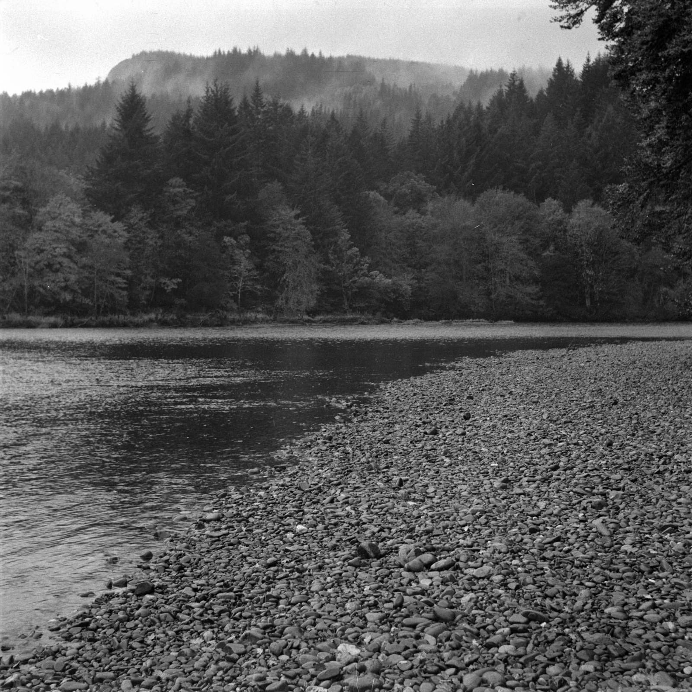
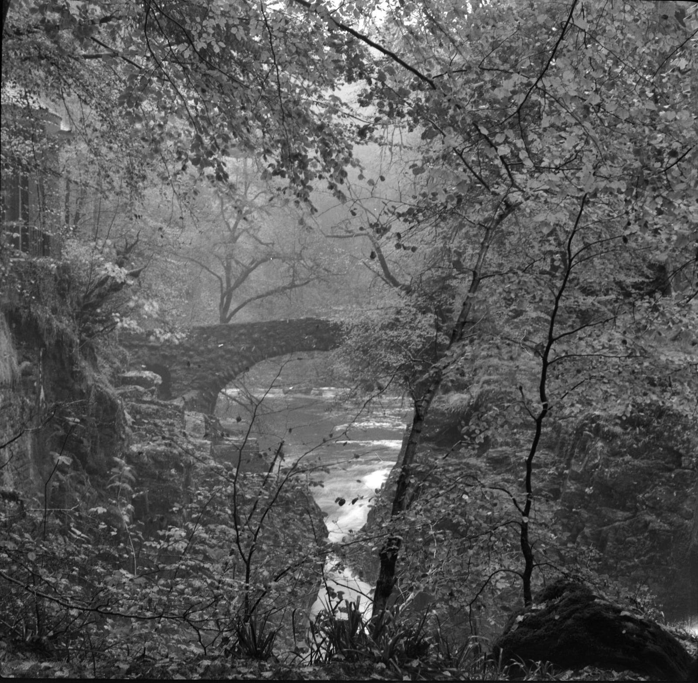

Berlin at Dunkeld in October
 The Hermitage
The Hermitage
My wife and I celebrated our first anniversary by returning to Dunkeld, where we were married. We had time, this time, to walk more slowly, considering only ourselves, and to enjoy the nature of the place. We both took cameras and enjoyed playing in the outdoors, visiting favourite places and just breathing the air.
 A Tayside walk by Dunkeld House Hotel
I took my little old Afga Isolette, a ridiculously cheap camera (some of the film I put through it costs more than the camera did) that has no meter or gadgets to tell you where to set the dials. You have no choice but to figure it out according to the light and the film parameters, and what you’re trying to achieve.
 At the Hermitage, looking towards the bridge.
I have ditched the neurotic habit of writing down every exposure setting of every frame. Consequently, I’ve enjoyed my photography more, although I am less certain of good results. One benefit of living in the modern age is that we have tools to make adjustments after scanning to yield something not unpleasing. These were tweaked a little in Capture One to try and retain the character of the film, as well as trying to achieve a reasonable photograph. This example features a little colour toning in the highlights and shadows:
 Killiekrankie shore, cropped and split toning in Capture One
Killiekrankie shore, cropped and split toning in Capture One
All a bit of fun.
Notes on the film
The first time I tried this film, I wrecked it with a stupid mistake in developing. This time, I sent it to AG photo for processing, not so much because I was afraid to develop it myself, but more because I have been too busy to do my own processing.
This roll I put through my little old Afga Isolette. Not much detail in the exposure list below because I have ditched the neurotic habit of writing down every exposure setting of every frame. I’ve enjoyed my photography more, although I am less certain of good results. Hopefully my success rate will improve with practice, if I learn anything as I go.
These were scanned on my Epson V600 and post processed in Capture One for levels, colour and cropping.
| Brand | Type | ISO | Format | Exposures | Camera | Lens |
|---|---|---|---|---|---|---|
| Lomography | Berlin | 400 | 120 | 12 | Agfa Isolette I | Agfa Agnar 1:4.5/85 |
| Frame | Image | Comment |
|---|---|---|
| 1. | Killiecrankie waterside | |
| 2. | Killiecrankie Bridge | |
| 3. | Killiecrankie shore | |
| 4. | Tay shore | Above |
| 5. | Tayside tree | |
| 6. | The dookit | Focus poor |
| 7. | The Hermitage | |
| 8. | The Hermitage | |
| 9. | The Hermitage | Tree stump |
| 10. | The Hermitage | The actual hermitage (header image) |
| 11. | The Hermitage | Bridge |
| 12. | The Hermitage | Waterfall |